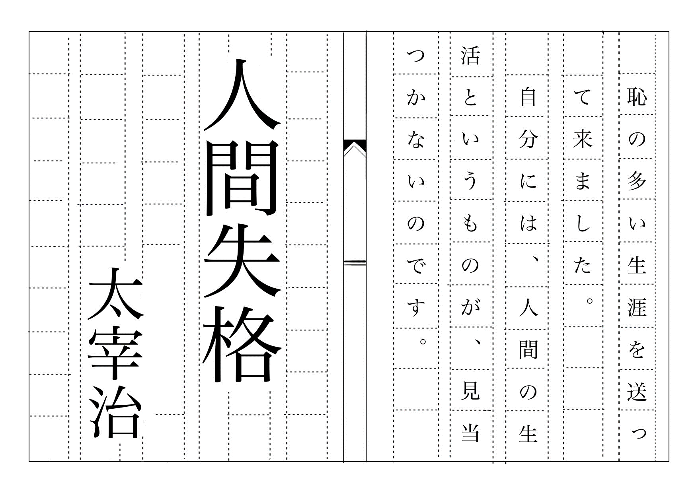

まずは自分の心が動かすものを選んでみました。
そこで好きなものと芸術を組み合わせて文豪にちなんだやつを作ろうとしました。
余談で夏目漱石の「心」にしようとおもいましたがあれは文章が長すぎる上、
皆が知っている一文があるかどうか思いつかなかったのと、小説もってなかったので無しにしました。
「私」と「K」の掛け合いのやついつか作ろうと思います。
作品のメインテーマは「２D小説」
文豪と原稿用紙というエモい天才的な組み合わせで作りました。
おしゃれかつ推し作品というオタク心をうまく突いたと思います。
心を動かすものってなんだと思う？と友達に聞いたら好きなものと答えてきました。
心を動かすものはなんだろうとずっと悩んでいたのに答えはすごい単純で。
なら心のままに好きなものを作ろうとしました。その結果今回は文豪を選びました。
本当は江戸川乱歩にしようとおもいましたが文章にするのは太宰治の人間失格が一番面白いと思い人間失格にしました。
原稿用紙を作るのにとてもとても苦労しました。
まず、私が普段イラストを描くように使っている「アイビスペイント」というアプリで簡単に原稿用紙を描いたあと、フュージョンに移しました。

これがアイビスペイントで描いたイラストです。
しかし、フュージョンに移したのはいいものの、ここからどうすればいいのかわからず、上からなぞりました。